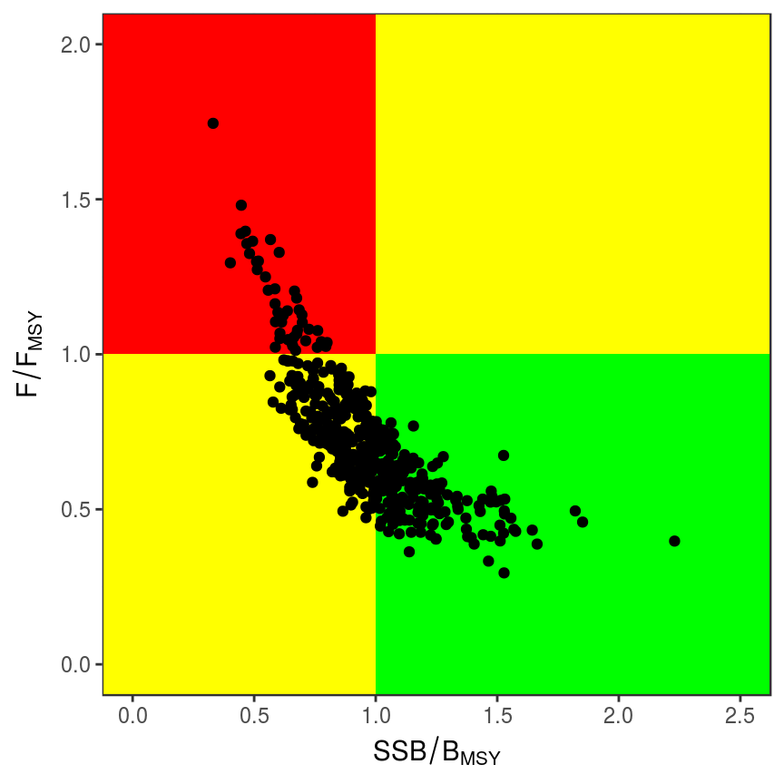
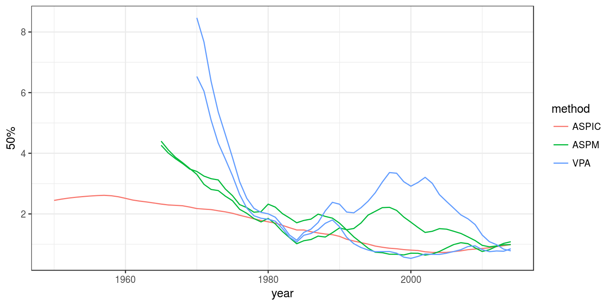
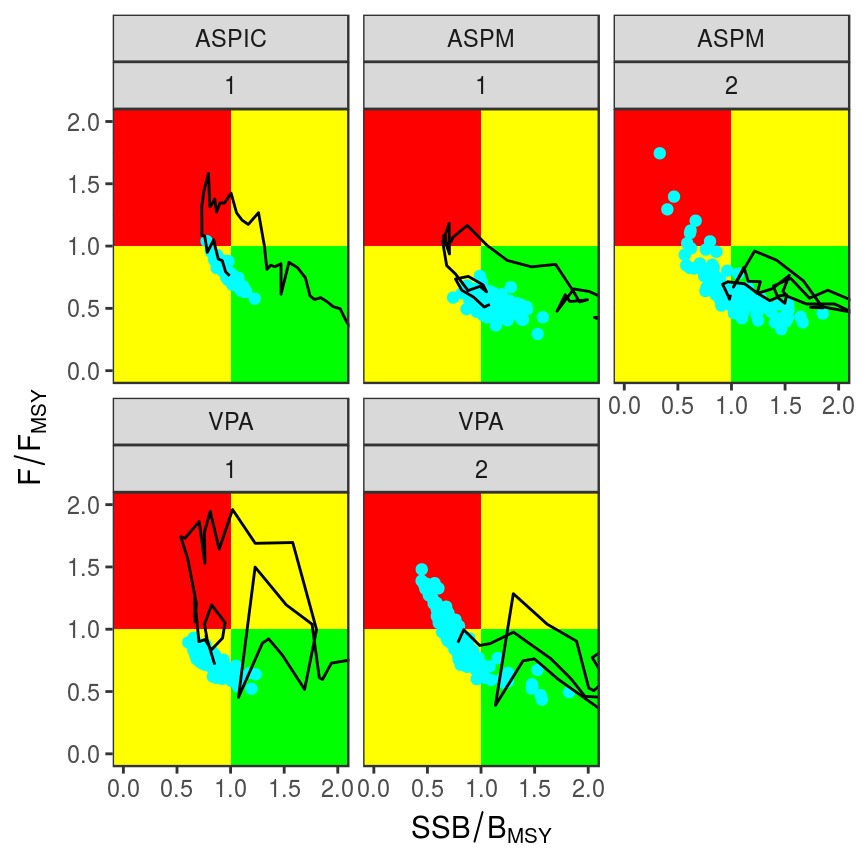
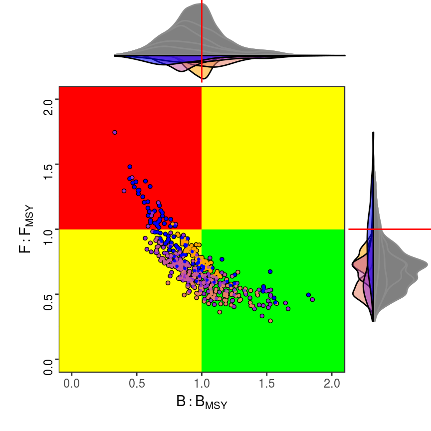
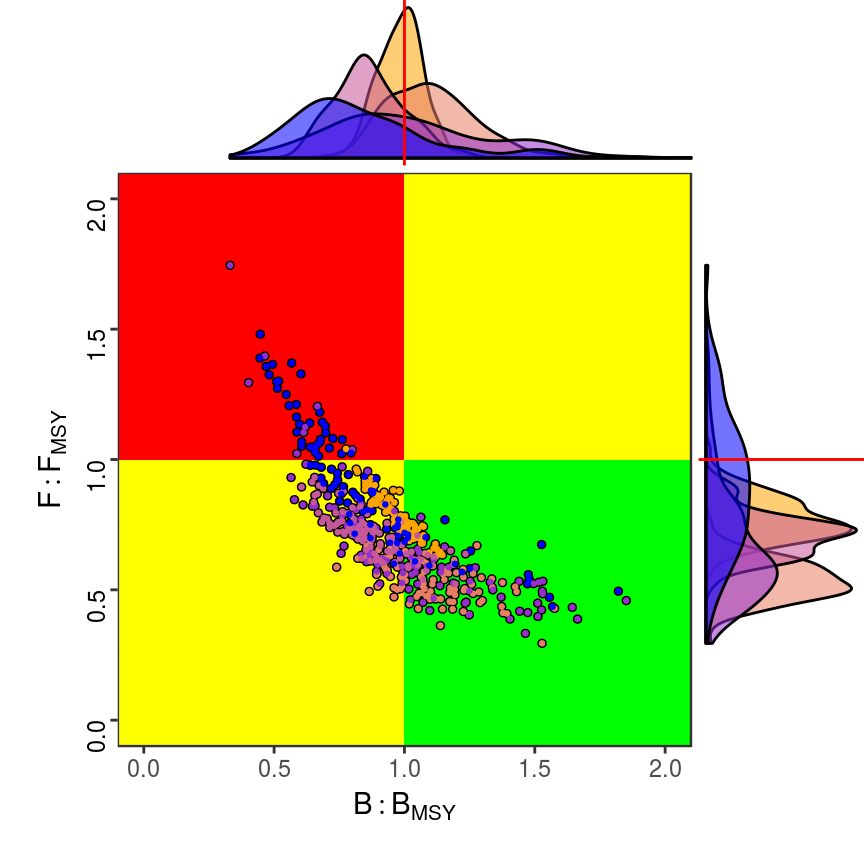
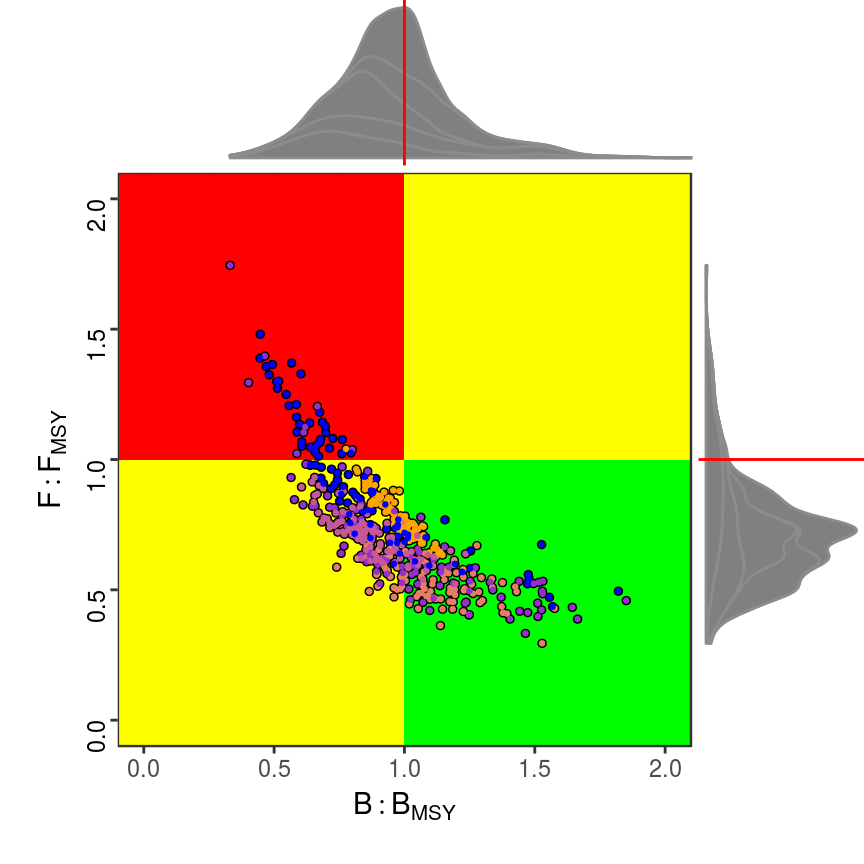
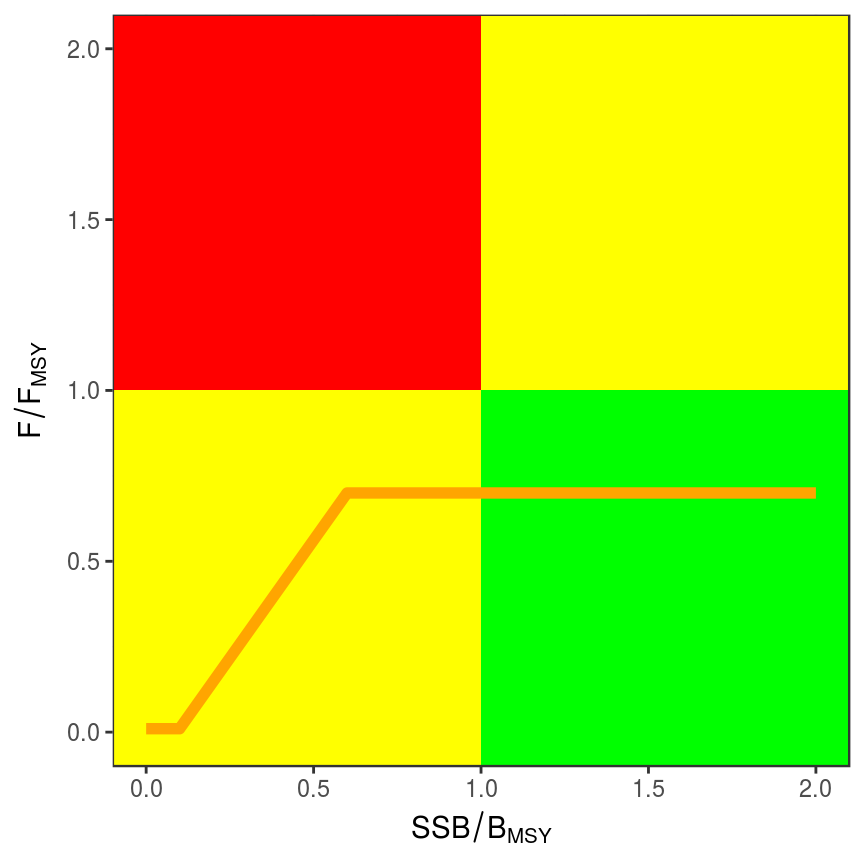

Kobe Advice Framework
Laurence Kell
18 September, 2017
Management Strategy Evaluation
Introduction
The Tuna Regional Fisheries Management Organisations (tRFMOs1) are intergovernmental organisations that are responsible for data collection, provision of scientific advice, and the management of tuna and tuna-like species. As a step towards harmonisation the tRFMOs have agreed on a common management advice framework, known as the Kobe Framework (Kell et al. (2016)).
Under the Kobe Framework two main main visualisation tools are used to provide scientific advice, a phase plot and a strategy matrix. The phase plots shows current stock status and exploitation rate relative to reference points such as \(B_{MSY}\) and \(F_{MSY}\). While the strategy matrix presents the the probability of meeting management objectives under different management options such as a total allowable catch (TAC).
Assessment advice within the tRFMOs is based on a range of models; for example integrated models such as Stock Synthesis (SS; Methot and Wetzel (2013)) and Multifan-CL (Hampton and Fournier (2001)), virtual population analysis (VPA), and biomass dynamic models.
The kobe R package has methods for reading in results from the main stock assessment methods and when running Managment Strategy Evaluation (MSE), computing summary statistics and for plotting.
Installation
The simplest way to obtain kobe is to install it from CRAN by using the following command in the R console:
install.packages("kobe", repos = "http://cloud.r-project.org/")The repos options can be changed depending on personal preferences and includes options such as choosing the directories in which to install the packages see help(install.packages) for more details.
Quick Start
So that users may have a better idea of what functions are available, which one to choose, or where to seek help, this section provides a general overview of the package. In particular it highlights the various elements, what they do, and provides some examples of usage. More details are given in later sections.
First, load the kobe package:
library(kobe)There is an example dataset for Atlantic yellowfin, used for illustration and as a test dataset, alternatively users can load their own data.
data(yft)The dataset contains historical estimates of biomass relative to \(B_{MSY}\) (stock) and exploitation level relative to \(F_{MSY}\) (harvest) for 3 assessment methods and 2 scenarios based on choice of catch per unit effort (CPUE) used to calibrate the models. In each case parameter uncertainty was estimated using bootstrap simulation and so there are 100 replicates (iter).
library(kobe)
data(yft)
head(yft) method scenario iter year stock harvest
1 ASPIC 1 1 1950 2.45 0.00386
2 ASPIC 1 1 1951 2.49 0.00430
3 ASPIC 1 1 1952 2.52 0.00873
4 ASPIC 1 1 1953 2.55 0.01116
5 ASPIC 1 1 1954 2.57 0.01048
6 ASPIC 1 1 1955 2.59 0.01314Plotting
Plotting is done using ggplot2 which provides a powerful alternative paradigm for creating both simple and complex plots in R using the ideas the Grammar of Graphics2 The idea of the grammar is to specify the individual building blocks of a plot and then to combine them to create the graphic desired3.
The ggplot functions expects a data.frame for its first argument, data; then a geometric object geom that specifies the actual marks put on to a plot and an aesthetic that is “something you can see” have to be provided. Examples of geometic Objects (geom) include points (geom_point, for scatter plots, dot plots, etc), lines (geom_line, for time series, trend lines, etc) and boxplot (geom_boxplot, for, well, boxplots!). Aesthetic mappings are set with the aes() function and, examples include, position (i.e., on the x and y axes), color (“outside” color), fill (“inside” color), shape (of points), linetype and size.
The phase plot plots stock status against fishing mortality relative to target reference points as a two-dimensional phase plot.
library(ggplot2)
kobePhase(subset(yft,year==2014))+
geom_point(aes(stock,harvest))
Split-apply-combine
kobe contains a variety of functions to summarise assessment results. These can be used with the plyr package to provide summaries by scenario and year. plyr has methods for running split-apply-combine procedures, e.g. first splitting a dataset into subsets, then running a function for each subset and then recombining the results back into a single object.
library(plyr)An example of estimating the quantiles of the current estimates of stock status by method and scenario
trks=ddply(yft, .(method,scenario), with, quantile(stock))plyr functions have a simple naming convention. The first two letters of the function tells the input and output data types, respectively. The one above takes a data.frame and returns a data.frame.
trks=ddply(yft, .(method,scenario,year), with, quantile(stock))The first argument, yft, is the input data frame and contains all the data from the last year in the assessment. The next argument are the variables to subset by over which the statistics will be computed, and the third processes the data.frame by each subset. with creates an environment constructed from data in which to run quantile.
head(trks) method scenario year 0% 25% 50% 75% 100%
1 ASPIC 1 1950 2.45 2.45 2.45 2.45 2.45
2 ASPIC 1 1951 2.47 2.48 2.49 2.49 2.51
3 ASPIC 1 1952 2.49 2.51 2.52 2.53 2.55
4 ASPIC 1 1953 2.51 2.54 2.55 2.56 2.59
5 ASPIC 1 1954 2.52 2.56 2.57 2.58 2.61
6 ASPIC 1 1955 2.54 2.58 2.59 2.60 2.63ggplot(trks)+
geom_line(aes(year,`50%`,
col =method,
group=paste(method,scenario)))
Advice Framework
Current Status
The phase plot identifies quadrants (regions) where the stock is overfished (biomass or SSB is less than \(B_{MSY}\)) or overfishing is occurring (\(F < F_{MSY}\) ) and a target region (where both $SSB > SSB_{MSY} and F < F_{MSY}). In the case of biomass dynamic stock assessment model results biomass may be used instead of SSB. The target region is also called the green quadrant, referring to the colour scheme typically used. The plots can be used to indicate for example when management plans to recover the stock to the target region should be implemented.
yft2014=subset(yft,year==2014)
kobePhase(yft2014)+
geom_point(aes(stock,harvest,col=method))+
facet_grid(method~scenario)
library(plyr)
trks=ddply(yft,.(method,scenario,year),
function(x) trks(x$stock,x$harvest,prob=c(0.5)))We can then add the medians of the historic assessments to the phase plots by adding layers to the object , i.e. adds an extra layer plotting the time series medians and the medians in the last assessment year. We then plot the results by assessment using to split them into multiple panels. Finally we get rid of the legend for since runs are plotted by panel.
kobePhase() +
geom_point(aes(stock,harvest), data=subset(yft,year==2014),col="cyan")+
geom_path( aes(stock,harvest), data=trks) +
facet_wrap(method~scenario) 
\end{center}\end{figure}
Densities
shadesmryCalculates the probability of an obervations occurring in a 2D cell using HPDregionplot given a sample calculates the bivariate region of highest marginal posterior density for two variables, using kde2d from MASS to calculate a bivariate density.
probCalculates the Densities of obervation in a 2D cell using Two-dimensional kernel density estimation with an axis-aligned bivariate normal kernel, evaluated on a square grid.
densityCalculates the frequency of an obervation in a 2D cell
freqinterpHas the stock recovered yet? i.e. stock>=1 and harvest<=1 in the current or an earlier time step in other words has it been in the green Kobe quadrant.
recoveredMarginal Densities
The phase plots show the cross correlations between stock and harvest, but many points overlay each other so it is hard to determine the actual probabilities or densities. To overcome this difficulty contours showing the bivariate probabilities can be plotted using e.g.
kobe:::kobePhaseMar(transform(yft2014,run=paste(scenario,method))[,c("stock","harvest","run")])
kobe:::kobePhaseMar2(transform(yft2014,run=paste(scenario,method))[,c("stock","harvest","run")])
kobe:::kobePhaseMar3(transform(yft2014,run=paste(scenario,method))[,c("stock","harvest","run")])
Projections
Strategy Matrix
The strategy matrix lays out the probability of meeting management objectives under different options, this may include if desired ending overfishing or rebuilding overfished stocks. An intention is to facilitate the application of the PA by providing Commissions with a basis to evaluate and adopt management options at various levels of risk, enabling management taken accounting for uncertainty.
Three Kobe matrices Tables~, and summarise the probabilities (by the ranges of 50-59 %, 60- 69 %, 70-79 %, 80-89 % and greater or equal to 90 %) for different levels of catch across multiple years of
- Biomass or SSB being greater than \(B_{MSY}\) ;
- Fishing Mortality or Harvest Rate being less than \(F_{MSY}\); and
- the combined probability of Biomass or SSB being greater than \(B_{MSY}\) and Fishing Mortality or Harvest Rate being less than \(F_{MSY}\)
Management Strategy Evaluation
aav
pid
dRate
hinge
iav
incrHarvest Control Rules
hcr= data.frame(stock =c(0.0 ,0.1 , 0.6,2.0),
harvest=c(0.01,0.01, 0.7,0.7))
kobePhase()+
geom_line(aes(stock,harvest),data=hcr,col="orange",size=2)
Summary Statistics
When using MSE a variety of performance measures (related to catch levels and catch variability) as well as stock status are required.
Example
…
- You can submit bug reports, questions or suggestions on
kobeat thekobeissue page,4 or on the FLR mailing list. - Or send a pull request to https://github.com/flr/kobe/
- For more information on the FLR Project for Quantitative Fisheries Science in R, visit the FLR webpage.5
- The latest version of
kobecan always be installed using thedevtoolspackage, by calling
library(devtools)
install_github('flr/kobe')References
Hampton, John, and David A Fournier. 2001. “A Spatially Disaggregated, Length-Based, Age-Structured Population Model of Yellowfin Tuna (Thunnus Albacares) in the Western and Central Pacific Ocean.” Marine and Freshwater Research 52 (7). CSIRO: 937–63.
Kell, Laurence T, Polina Levontin, Campbell R Davies, Shelton Harley, Dale S Kolody, Mark N Maunder, Iago Mosqueira, Graham M Pilling, and Rishi Sharma. 2016. “The Quantification and Presentation of Risk.” Management Science in Fisheries: An Introduction to Simulation-Based Methods. Oxford, UK: Earthscan (Routledge), 348.
Methot, Richard D, and Chantell R Wetzel. 2013. “Stock Synthesis: A Biological and Statistical Framework for Fish Stock Assessment and Fishery Management.” Fish. Res. 142. Elsevier: 86–99.
Commission for the Conservation of Southern Bluefin Tuna (CCSBT), Inter-American Tropical Tuna Commission (IATTC), International Commission for the Conservation of Atlantic Tunas (ICCAT), Indian Ocean Tuna Commission (IOTC) and Western and Central Pacific Fisheries Commission (WCPFC).↩
Wilkinson, L. 1999. The Grammar of Graphics, Springer. doi 10.1007/978-3-642-21551-3_13.↩